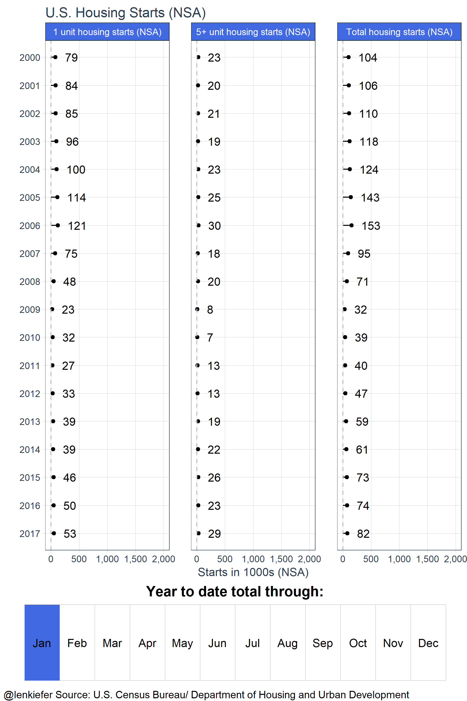

ARE HOUSING STARTS GRINDING HIGHER, OR GRINDING TO A HALT?
Today the U.S. Census Bureau joint with the U.S. Department of Housing and Urban Development published updated estimates of housing starts through August of 2017. Per the report privately-owned housing starts in August were at a seasonally adjusted annual rate of 1.18 million, down 0.8 percent from July’s revised estimate and up 1.4 percent from a year ago. Neither the month-over-month or year-over-year changes were significant.
The relatively flat starts numbers–subject to substantial sampling volatility–continues a pattern we’ve seen for about two years now. Housing starts have been only gradually increasing if at all in recent months.
And starts are coming from a low base. See this post for a discussion of where construction needs to be to match underlying demand. The chart below shows monthly total U.S. housing (at a seasonally adjusted annual rate) since 1960.

While there has been substantial volatility in housing starts they have historically averaged about 1.5 million per year, and that’s not adjusting for population. If we adjust for population, like in the graph below, housing starts look even weaker.

Viewed from this perspective housing starts have a long way to go to get back near their historical average or from what a growing population would need. See this post for a detailed look at where in the U.S. housing supply has lagged population most.
But let’s zoom in and look at more recent data. Let’s also acknowledge uncertainty in housing starts estimates and add confidence intervals to the plot.

After accounting for uncertainty (the shaded bands in the plot depict a confidence interval for the monthly estimates) housing starts have been essentially flat since about mid-2015. There might be a slight upward trend, but if it’s there it’s much more modest than the rates of increase we saw from 2010 to 2015.
What is going on?
Multifamily starts cool off, single family starts grind higher
To better understand what’s going on, we need to disaggregate the national level statistics for total starts into single family (1 unit) and multifamily (5+ unit) structures. They have quite different dynamics.

Up until recently, multifamily starts were going strong. Construction of structures with 5 or more units was running well above historical averages. Recently, multifamily starts have leveled off and shown some weakness in 2017. However, note that the level of multifamily starts still remains well above the historical average.
Single family starts have been grinding higher, but it has been slow going. Relative to historical averages, they are still only about 2/3 of the way recovered. Going forward, it’s going to take strength in single family starts to drive overall U.S. construction activity higher.
Year-to-date activity on pace for best year in a decade
The monthly estimates can be quite noisy, so it’s often useful to compare year-to-date totals. The chart below shows year-to-date starts (total, single family and multifamily not seasonally adjusted) through August.

Despite some recent weakness, total starts are on track for their best year in a decade.
Animated gifs
To help visualize what’s going on, I made several animated gif versions of these graphs. Sorry about the colors, the code for many of these preceded our fancy new getup. We’ll fix it later if we write these gifs up.
Check them out.


